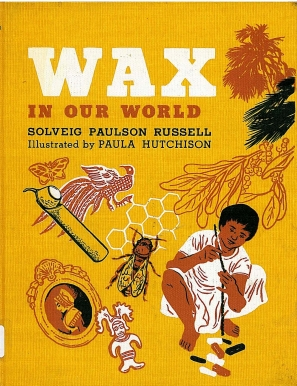

Monday, August the 17th, 2009
back to: title, date or indexes
From the splendid Awful Library Books, a 1966 title that really ought to have been an international bestseller.

While Mary correctly points out the likelihood of the publishing magnate saying “I think the kids are looking for a good book on wax”, she overlooks clear evidence from the cover that the book's true purpose was to popularise, for tinies, some sort of Aztec-voodoo wax doll curse-and-abomination pin-sticking procedure.